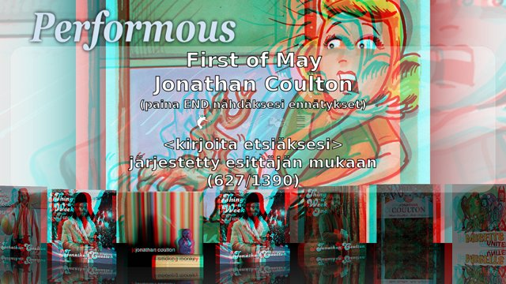
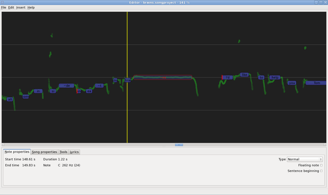
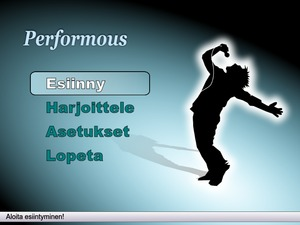
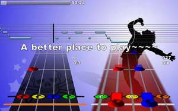
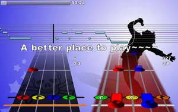

News
2016-01-23 - Performous 1.1 released
It's slow, but we got a release out! This is mostly a bugfix release, but some new features have snuck in:
- You can now enable a "center channel suppressor" (poor-man's karaoke) in the options of with Ctrl+C (thanks to Matthias Keysermann)
- You can now use up to 8 microphones (thanks to Arjan Spieard)
- Startup errors are not silent anymore (you get an error dialog)
- Support for more controllers was added
- On dual-GPU systems we request the high-performance GPU
And some bugfixes:
- UTF-8 encoded files with BOM are handled correctly (in all text files)
- Fixed some OpenGL issues with shaders especially on Intel card
- Fixed font loading: Pango is now used on all platforms, so Performous should look the same everywhere
- More minor fixes (OS X build, clan build, fixes for crashes)
Under the hood we now support compiling with newer ffmpeg versions and switched from GLEW to libepoxy, which should make GL support a bit more robust across all hardware.
2014-11-01 - Performous 1.0 released
The Performous team is proud to announce the release of Performous 1.0! Yes, we are not quite dead and even got a release together for Halloween!
This release comes with some new features and quite a lot of changes "under the hood". Most notable for user, we have a working Windows (and maybe OS X) release again. This brings Windows users all the cool features from the 0.7.0 release like duet-mode and everything this release has to offer!
So, what's new?
- We have a new song browser menu
- You can now build playlists, so you don't have to return to the songbrowser between songs!
- There is now experimental support for microphone pass-through, so you don't have to fiddle with ALSA or such stuff, just enable it in the settings and "enjoy" hearing your own voice through the speakers!
- The duet mode is better than ever, we fixed some corner cases and show microphone icons in duet menu, so you know which microphone has to sing which part before staring the song.
Performous was changed to use SDL2 instead of SDL, which should give a much better experience with fullscreen among other things.
Unfortunatly, most of our translations are not up-to-date. Currently, only German, Finnish and French are updated. So if you want to help translate Performous into your langague, drop us a line on GitHub or on IRC (#performous on FreeNode) and we'll incorporate your translation.
Special thanks for Niek, Tobias and Gregorio who were instrumental in making this release happen.
Happy performing!
2013-06-17 - Localizations need to be updated
As the next release is nigh, we are calling everybody to check that translations are correct and complete. There have been numerous changes to the messages that Performous emits and thus many updates are required. Please let us know if a translation still needs work.
2013-05-05 - Status update
It's been a long time since the last release. The new input system and other development done during the last six months offer numerous usability improvements and an important bug fix for video playback on Ubuntu 13.04, so we'll be working hard to tie up the remaining loose ends and push out the next release. Until then, it is highly recommended to use the Git master instead of 0.7.0.
We'd like to welcome the latest addition to our team: Niek Nooijens is a C++ programmer whose first feature is playlist support. The playlists and an earlier songmenu branch, implementing better navigation and new looks for the song selector, are now merged to the master branch, and will be part of the next release.
On the Rasperry Pi front things aren't as bright, as the hardware seems to be way too slow to even run the main menu smoothly. If you are familiar with optimizing for this platform, help is certainly welcome. Even if it cannot work, the work done for RasPi will be very useful for other GLES 2.0 platforms such as smart phones and tablets (especially so with HDMI and USB-OTG adapters!).
We are hitting a dead end on the encrypted SingStar PS3 files. These seem to be encrypted in AES128-CTR mode but we haven't been able to extract the keys. Known plain text attacks have been successful but they don't get us very far because different SingStar releases use different keys.
We are still looking for 2D and 3D artists so if you'd prefer Performous not looking ugly, please contact us (click Webchat on the left)!
2012-12-17 - Status update
This is apparently a frequently asked question, so I'll answer it here: yes, we are porting to Rasperry Pi! The game currently starts but there remains work to get the textures working properly. Those who are interested should have a look at the egl branch. This is also at the same time a more generic OpenGL ES 2.0 port, allowing Performous to run on a wide range of mobile devices.
We also decided that it is time to switch to C++11, the new C++ standard. As a result, GCC 4.6 or better (e.g. Clang) is required for compiling. We'll be trying to only use the subset of features supported by recent versions of GCC, Clang and MSVC but especially the Microsoft compiler receives very little testing. In case there are issues with this (other than that you just don't want to upgrade your compiler), you should contact us ASAP.
There are plenty of smaller usability changes and improvements. The input system has finally gotten the long needed rewrite, allowing us to support more devices and to have them autodetected better than before. This was merged to master branch a couple of days ago and we'd like to know of any regressions that it may have caused (e.g. some controller types not working properly).
The ss_pak_extract tool can now extract SingStar PS3 .pkf files but we have no access to the encrypted .pkd files that contain all the songs. I found out that the encryption is vulnerable to watermark attack and thus were able to identify that it is actually a .pkf file with substitution cipher applied. The substitution table depends on byte offset but no other factors. This means that the algorithm is sufficiently weak to allow for known plain text attacks but so far we haven't been able to figure out exactly what kind of substitution is used or to extract the key. PS3 hackers and cryptography experts are welcome to join and help us.
Furthermore, we think that the graphics of the game need an overhaul. In particular, we are looking for a 3D modeler who could make note symbols and other such objects as much of that is going to be done in 3D instead of flat SVGs. A skilled SVG/Inkscape artist is also desperately needed as there still remains a lot of theming work to be done in 2D.
You may contact us by Webchat (IRC) or Feedback (issue tracker) links on the navigation bar.
2012-11-17 - Website, services and docs overhaul
We are currently migrating our services from SF.net and self-hosted to GitHub. Git on SF.net has always been operating very slowly and there no longer seems to be any reason to stay there. GitHub seemed like the most sensible option. Their servers are always up, everything runs fast and we'll be able to get most of the services that we need under same roof without developers having to register to a number of separate services.
Those with existing git clones from SF.net will need to change the upstream URL:
- git remote set-url origin git://github.com/performous/performous.git
2012-11-13 - Performous 0.7 released

After a long silence we've finally released another one. There are too many new features to list here but here are some hilights:
- Gameplay
- Full duet support! (SingStar XML, UltraStar TXT and Frets on Fire formats)
- High-pitched soprano voice is now detected properly (thanks for the bug report!)
- Graphics and performance
- Modern rendering pipeline
- OpenGL 1.x is gone for good, OpenGL 2.1 or better required
- Improved graphics quality
- Stereo3D mode
- Anaglyph glasses, top/bottom, experimental HDMI 1.4 support
- Requires OpenGL 3.3 or better
- Optimizations everywhere to make it run even faster (port to Android, anyone?)
- Asynchronous texture loading
- Makes menus run faster and smoother
- Black rectangles may sometimes appear during loading
- Dance mode still sucks (HELP WANTED!)
- Controllers
- Instrument type configuration via settings menu
- More USB devices autodetected (controllers.xml)
- MIDI drum mapping is now configurable (mididrums.xml)
- Miscellaneous
- Improved webcam support and compatibility
- Configurable legacy charset (for non-UTF-8 songs)
- Tools (ss_extract and friends) cleaned up and can now be cross-compiled for Windows
- Massive amounts of small fixes, improvements and code cleanup everywhere
- Translations
- Asturian, Chinese, Danish, Dutch, Finnish, French, German, Hungarian, Italian, Japanese, Persian, Polish, Spanish and Swedish
We have left out the integrated torrent downloader (git branch 'torrent'), 3d dance mode (git branch 'dance3d') and various other experimental features that will hopefully be done by 1.0. Some fixes and improvements have been ported back to OpenGL 1.x version (git branch 'legacy') but it is no longer maintained and no releases will be made of it.
Due to lack of manpower, no Windows binaries are currently available. Linux packages should become available as soon as distros package them (check for 'performous' and file a bug if they aren't shipping 0.7 yet). Other options are available on our download page.
2011-02-28 - Song editor 1.0 released
The 1.0 release of Composer song editor is now here. There are quite a few visible changes since rc1:
- Piano keys
- Unified Note properties & Tools tab
- FoF MIDI export
- Performance optimizations
- Synth now also on Windows
- More UI feedback using busy-dialogs
- Small fixes and tweaks
Unfortunately we couldn't provide a Mac bundle at this time due to a persisting bug, but the development continues.
Downloads area once again available at SourceForge. Composer also now has a little website and a wiki page. Please provide feedback on our IRC channel.
2011-02-25 - Did someone say stereo3d?

2011-02-21 - Song editor 1.0rc1 released
An often requested feature for Performous is a song editor and we finally got a chance at implementing one once a Swedish company hired two of the Performous core developers to develop one for them; if more information of this stealth mode start-up is needed - requests can be mailed to bjorn@bjornhammar.com. It was agreed that the editor would be released under the same license as Performous: GNU GPLv2 or later.
Since there are a few promising open source song editors, we started by reviewing them and seeing if we could build on top of existing software. Editor on Fire ended up being the top candidate. Unfortunately it had a very different workflow than what the company needed and also the custom UI and being written in C (rather than C++) were major drawbacks.
Another big question was whether to implement it as a feature of Performous or as a separate application based on Qt. On Performous it could benefit of all the existing infrastructure (OpenGL, audio playback and so on) but also it wouldn't be able to easily use existing widgets and dialogs that are very important for an editor. Also we wanted the editor to be easily usable by everybody instead of tying it down to the game, so we decided to use Qt. Using Qt as the library was a no-brainer as it is the only truely cross-platform solution (native Windows, Gtk and OS X widgets and dialogs) besides wxWidgets and the latter is horribly bad.

So, we have now worked on the editor for seven weeks and we need actual user feedback on what to improve before the actual release. There is a getting started wizard in the editor to make you familiar with the workflow where a large part of the process is automated via pitch detection and other means, making song creation easy. Only vocals will be supported for now but other modes are going to be available at a later time, under pro bono open-source development.
Get the release candidate from SourceForge and give your feedback on our IRC channel as soon as possible, thanks. Note: the portable-package does contain also 32 and 64 bit linux executables, but for them to work, you need suitable versions of the dependency libraries installed, so you'll probably be better off compiling yourself.
2010-12-09 - Website redesigned
For long have we attempted to summon a web developer to create us a new site but that never happened. That feeling of deep shame every time I displayed the site to someone finally overcame me and I decided to do the job myself since no-one else was doing it. What you are looking at is just that. The new one boosts a lot of bleeding edge web technology and there could be some bugs as we only tested Chrome, Firefox, Safari, Opera and my mobile phone (all of which worked fine with reasonably high performance).
Hopefully you like it but you can always drop by at our chat channel and give feedback :)
2010-10-31 - 0.6.1 released
This is a small but important bugfix release most notably fixing issues with non-UTF-8 device names under localized Windows. The full list of changes can be read below. We provide Windows installer and the Ubuntu ppa is updated.
- Fix character encoding bug in device names
- Windows installer improvements
- Joinmenu usability tweaks
- Menu performance optimizations
- Spanish translation updated
2010-10-24 - 0.6.0 released
The long overdue 0.6.0 release is now here. This release brings many technological improvements as well as a lot of new gameplay features. Thanks for all the new (and old) contributors.
- Gameplay
- Multiple vocal track support (no duet yet)
- Toggleable karaoke with songs that have separate song and vocal tracks
- Solo parts for guitars
- Big Rock Endings
- Drum Fills (with God Mode for drums)
- Instrument hit timing indicator
- Lefty-mode for guitar and drums
- Join menu for difficulty/track configuration
- Audio system completely rewritten
- Single backend: PortAudio v19 (no more plugins)
- Can still use jack/pulse/alsa etc. through PA
- Easier to maintain, simple architecture
- Different bugs and workarounds than before
- Configuration
- Sorted to category submenus and displays multiple items at once
- Ingame audio config with no need to restart Performous (except when audio devices hang)
- Controllers
- More controllers are autodetected and supported properly
- XML config file allows adding/modifying controller types without touching C++
- MIDI drum support (build-time option)
- Song browser
- Song filtering by instrument type (F5-F8)
- Song parsing improved for faster loading and other improvements
- Uses less memory due to notes not being loaded before entering a song
- Miscellaneous
- Webcam support (build-time option)
- Graphical improvements and more random backgrounds
- SVG caching system (menus load muuuch faster once cached)
- Notification system (more UI feedback)
- ss_extract now supports all SingStar PS2 DVDs (PS3 is not supported)
- Translation updates, including config localization
- Detailed verbosity controls via new logging system
- Hordes of other tweaks and fixes
For many languages the translations are currently lacking updates. Another thing we are lacking is good graphics as well as developers for the dance mode. If you think you'll be able to do better, offer your work on #performous.
With this release, we provide a Windows installer. Ubuntu packages should be available soon at playdeb.net and hasty ones can use our PPA at Launchpad. Binaries for other platforms follow when the packagers have time to create them - in the mean time you can compile yourself from the source.
2010-08-21 - Status update
Good news everyone, cross-compiling binaries from Linux for Windows is pretty much ready for prime-time. You can check for yourself by downloading a testing installer from the wiki. It would be nice if you could tell us how it works for you. The Mac bundle presented previously is broken, but luckily there has been OSX development work done and we have a new one at the usual place. All in all, it seems every platform is now in quite good shape.
We've now switched to using the new audio code and things seem to work rather well. Also the branch that moves controller configuration to an xml file has been merged. Although it is not yet perfect, it presents users a way to create own mappings and autodetections even though there is not yet a graphical UI for that.
The new joining menu is also now part of main codebase, but didn't arrive in time to be included in the provided testing builds. Anyway, if no significant issues rise in overall testing, perhaps we might start looking into making that long overdue 0.6 release...
2010-07-31 - Status update
We have progressed to the point where the new audio engine is pretty much on par with the previous one feature-wise. For merging, it would seem we only need some testing and tweaks to the time code calculation. Due to a bug with pause in the current audio system, the joining menu branch might require the new audio code before taken into use. Some visual clean-up is also in order. In addition, there has been initial work to move the controller mappings out of the executable, to make it much easier to add new ones.
On packaging side, stump created a script that can easily cross-compile the dependencies and Performous itself for Windows from Debian/Ubuntu. It even produces a working installer. Sadly, the resulting build is very unstable, sometimes allowing singing or dancing, but mostly just crashing when entering the song. This seems somewhat consistent with the earlier expirements when compiling in a native mingw32 environment. So, if you have experience with stabilizing gcc builds for Windows, feel free to pitch in!
Luckily, Mac OSX side appears brighter - we now have a fresh testing build at the wiki. There are some rough edges that need filing, e.g. some textures disappear in fullscreen mode, but it is certainly usable and ends the era where our last OSX binaries date back to 0.5.0.
2010-07-16 - Status update
The reason why the next 0.6 release isn't out yet is because of lacking Windows and OSX packaging. However, we haven't been sitting still - there has been significant development in various feature branches. One of them, SVG caching that greatly speeds up screen transitions is already merged to the main code.
Another branch represents the next generation of our audio engine. It gets rid of the complicated plug-in system and relies on a single cross-platform backend: PortAudio. The new code brings many improvements and makes future development easier. The system is already usable - configuration implementation is the only significant thing left to do before taking it into use.
Third exciting new thing is a nearly ready instrument joining menu that allows more intuitive and more expandable per player gaming experience configuration (see development picture below). The same generic menu structure will later be used to implement better configuration screen, among other things.
{kind=link}
We also have the first free Jonathan Coulton full band song (with separate audio for all instruments!). You can try it here (note that a recent git version is required due to a bug in midi lyrics parsing).
Although the release time is unknown, Ubuntu users can rejoice as we now have a Launchpad PPA (see details at our wiki), from where cutting edge builds of Performous can be easily installed and tested. PPA builds also include somewhat expermental midi drums and webcam background features. We have also been looking into the possibility to cross-compile Performous for Windows on Linux host. That would not only make releasing much easier, but would also allow automated nightly Windows builds.
2010-04-20 - Status update
Many fixes have been made on the code lately (SingStar ripper enhancements, left-handed support, new highscore, Windows fixes and other bugfixes). We now think that the current code is ready for a release really soon. You can help us to make sure there isn't any regression in the current git version by testing it, or for Windows users by testing the latest nightly build.
We are also proud to announce that Performous has been featured in the HotPicks section of Linux Format, which is the best-selling Linux title in the UK. You can find the article in English here (©Future Publishing).
Two new videos are also available on YouTube. There is one screencast from cousteau available here and one video from Tronic:
2010-02-04 - Status update
Currently we have no easy solution to the Windows audio sync issues that still cause some jerkiness and it appears that most of the audio code will have to be rewritten to really fix the issue properly. Because of this the next release will be delayed further and it is likely to be numbered 0.6 instead of another 0.5 bugfix version as there has been significant work done on improving the graphics and there also are many usability fixes. Part of the problem is that people find implementing new features more interesting than fixing complex bugs, something that I gather to be a very common problem with open-source projects where all the developers are volunteers.
2010-01-16 - 0.5.1 released
This is a source-only bugfix release, most notably fixing issues with Windows version and adding more instrument mappings. List of changes is below and the packages can be found from the download page.
- Advanced timing code for reducing jerkiness (but causes more jerkiness for some because it is not properly tuned yet)
- Dance gameplay improvements
- Many controller detection and mapping fixes
- Fix flashing singing note issue
- Fix dance game not working under Windows (missing file)
- Fix Windows font for scale in singing note lines
- Dutch translation
- Add a simple joystick button identification utility (--jstest)
- Other small tweaks
The next version (0.5.2) will be released once we sort out the remaining issues (estimated a few days) and it will also include binaries.
2010-01-13 - 0.5.0 released

This is the first release to include Windows and Mac binaries as well. A lot of work has been done by Xaldyz, Zar, Stump and others to make this possible. Meanwhile a large number of improvements and new features have been added, including of course the all new dance simulator developed during December by Aave, JNikkola and Kemppi, out of whom Aave has already become a core developer, already boosting about 200 commits. Another new developer who has been very active in this release is Peque who created the new main menu and gave some face lift for the default theme, among other things. The new features include:
- Dance mode
- StepMania .sm format
- 4-8 panels on each dancepad
- Multiplayer (but not together with band yet)
- Mines, hold and regular notes in various different game modes
- Keyboard and USB dancepad support
- Crappy graphics, no ITG colors and no customization (for now)
- Band mode improvements
- God Mode for guitars (similar to StarPower)
- More graphical effects (glow, fire, ...)
- Joining during game & dead coming back to life
- Whammy bar gameplay
- Streak counter popup
- Guitar Hero X0 guitar support (not tested)
- Star when singing a note well
- Main menu completely reworked
- Localizations: Finnish, French, German, Italian and Spanish
- New song folder [Performous data]/songs
- The data folders depend on the OS the game is running on, including:
- On UNIX ~/.local/share/games/performous
- On Windows [Application data]/performous
- On all systems the data installation path (relative to executable)
- Old ~/.ultrastar/songs and other such folders continue to function.
- Usability
- Confirmation for song quitting
- Better usb controller navigation (e.g. drum/dancepads can be used)
- Instrumental part skipping for singing with FoF songs
- Previews start from further of the song
- In-game volume control
- Keyboard key repeat disabled (preparing for generic controller repeat)
- Internal
- Use libpng/libjpeg directly, instead of Magick++
- Navigation abstraction
- Windows fixes
Head over to the download page to get the new version. Because of the very large number of new features and due to porting to two new platforms we expect the release to be buggy. Please let us know if you find any problems. We'll try to release 0.5.1 soon with possible fixes and more new features. The Windows version is known to have various issues but we need all of them reported so that 0.5.1 can be made better (surprisingly we severely lack Windows testers).
2009-12-12 - 0.4.1 cancelled, Windows alpha available
We have rather large new features in the development version and because of this the next release will be 0.5.0 rather than 0.4.1. The hilights include a new menu and of course the dance game feature, which we just tested in two player mode with actual dance pads. No release date other than "soon" has been set.
Windows alpha build from a few days ago is available here. A release is coming later, once we manage to remove the rough edges, hopefully with the 0.5.0 Linux release. The OS X bundling effort has ceased for now and we really need more Mac developers to get the job done. Compiling the software is easy, but bundling has proven to be difficult.
2009-12-05 - The Slashd-- LifeHacker Effect

I was wondering why my network connection was lagging while playing TA Spring (a great open-source RTS game which you should also check out). The site stats revealed that LifeHacker had linked to us and even though I had never heard of that site before, it is apparently very popular, as seen in the statistic where you can see a huge peak even though the day isn't even over yet (picture taken at 15:00). :)
Someone also made a Youtube video of Performous 0.3.2 today. Unfortunately he doesn't have microphone connected to the game, apparently, so you can't see the pitch display and scoring parts at all :(

In other news, we have working Windows binaries (thanks to the hard work by Xaldyz) and it seems that we will be able to release these with the upcoming 0.4.1 release, even though some cleanup and an installer are required.
The OSX bundle doesn't look so good as apparently there are problems with bundling some of the libraries used. Compiling on MacPorts yourself is easy, so please consider that if you are a Mac user (there are instructions on the Hacking page).
2009-11-28 - Performous 0.4.0 released
 

A major new release that not only contains improvements to the singing game you all love but more importantly extends the game into a full-fledged band game. Since the pre-release at Assembly Summer 2009 demo party, a large amount of improvements have been done, improving both the gameplay and the graphics. It is not perfect yet, but this certainly is a good time to make a release. Changes since 0.3.2 include:
- Guitar, bass and drums
- Uses songs in Frets on Fire / FoFiX format
- All tracks (including vocals) are supported
- Autodetection of any connected Guitar Hero and Rock Band instruments
- Support for using a keyboard as guitar controller (FoF style)
- Better hammer-on/pull-off support than in other games
- Engine tries to figure out player's intention instead of picking the nearest chord
- Multiplayer for as many players as you have instruments for
- Full 3D note visualization
- Initial hiscore support (press End in song browser)
- Textual feedback for singers after each line
- Guessing background/cover images and videos by filenames (if not specified in song files)
- SVG graphics and fail samples from Frets on Fire (GPL for the win!)
- Major changes in the internals, including a completely new audio mixer
- Configuration system improvements, now properly supports system and user conf
- Always use desktop resolution for full screen mode (instead of mode switching)
- Many minor bugs fixed
- Build/install changes and cleanup
- Installs only minimal amount of cruft
- Increased version requirements for Boost, CMake, etc.
- Various small bugs fixed
Special thanks to all the new developers who participated in this release (see a list of contributors and their activity at Ohloh.net). Without you it would not be possible to develop the game at a rate greater than ever before :)
2009-11-16 - Testers needed
Since the last status update we have had active development and currently the codebase is starting to look suitable for a release. Since waiting more will not make things better, we have set the release date as the next weekend. Please help us test the development version (git master) and let us know if there are any problems, especially if there are any regressions from 0.3.2. The instrument feature is not very pretty, but the playability of it already seems better than that of Frets on Fire. There are a few known issues with the FoF format song parser when dealing with vocal tracks. It is likely that these will not get fixed in time for 0.4.0.
2009-10-28 - Status update
The development has been quiet during the last two months, but we have done various smaller fixes. The guitar support has been improved with pull-off support and new scoring. MIDI drum support is in the works. We decided not to release 0.4 yet, even though it would bring major new features, as the sound code has some regressions that may hurt users who don't even need the band game features. A release will be made once these issues have been fixed.
In other news, we have three new developers working on a dance game feature in a separate branch. If all goes well, that should be available in the 0.5 release in January or so.
The current band game graphics suck, so we are desperately looking for talented SVG graphicians. If you think you can work fluently in Inkscape or some other SVG software, and think you can help, please contact us (preferrably on IRC channel #performous on Freenode).
2009-08-23 - Git repository address changed
SF.net now supports multiple repositories and because of that the address has changed. Use git config remote.origin.url git://git.performous.org/gitroot/performous/performous to set the new URL in your existing repository.
2009-08-07 - Performous BAND at Assembly gamedev
In the past few weeks we have been working on band game features for Performous. They are developed in a private repository because we wanted to participate in the Assembly game development competition, where the new features were released under the special Performous BAND release that had the singing features disabled. While this code is still very experimental and quickly hacked together, we plan to improve it in the coming weeks and release Performous 0.4 with all the features combined (you can already find this in our git repo).
If you happen to be at Assembly, please come over to table F0 to try it out yourself! I can assure you that it does not have audio sync issues (we take care of these using three separate latency settings).
The game autodetects any connected Guitar Hero and Rock Band instruments, plus you can use a regular keyboard as a guitar. No configuration required. You can have as many players as you have instruments connected. Drums and other tracks of the FoF format songs (e.g. Guitar Hero or Rock Band rips) can be played.
2009-07-28 - Performous 0.3.2 released
This is a bugfix release that brings no new features. This is likely to be the last release of the 0.3 series. Changes include:
- Workaround for FFMPEG bug that was making it crash on i386
- The Singstar ripping tools now use ss_ prefix in their names
- The performous.sh wrapper (used for non-standard installation path) now passes parameters properly
- GStreamer and PortAudio drivers disabled in our binary packages (let us know if you need them)
- A bunch of other things
2009-07-14 - Status update
We are currently preparing a bugfix release 0.3.2 that will bring no new features but that fixes various issues of 0.3.1. In order to do this properly, please let us know if there were any issues in 0.3.1 that you'd like to have fixed. Additionally, it would be nice if you also helped testing the git branch 0.3, aiming for this release. Use command git branch 0.3 origin/0.3 && git checkout 0.3 in your cloned repository to switch to the 0.3 branch (git checkout master will switch back to the master branch).
On the master branch we have implemented preliminary support for the Frets on Fire / FoFiX song format. Performous can currently extract the notes from the songs and if the song has lyrics (e.g. Rock Band rips), you can sing it the Performous way. We have 3d rendering of guitar neck working, but gameplay is still missing. Further, there is a simple C++ clone of Frets on Fire, called Silky Strings, in our repository and build system. Building it is not enabled by default, so you will have to use ccmake to enable it. This game is used as the basis for our implementation.
Finally, a little request. Do you like Performous? You can register as a Performous user on our Ohloh page and add a pin to the map as we'd love to see where Performous is being used! For more information, see http://www.ohloh.net/projects/performous.
2009-07-06 - Performous 0.3.1 released
Eight months after the 0.3.0 release, the Performous team is proud to announce the release of the 0.3.1 version. Whereas it is only a minor revision number, it updates lots of things (over 350 commits).
Special thanks go to all contributors (Tronic, Yoda, knittl, zarn, Jack_MD ...).
New features:
- Up to four player multiplayer game with many mics from many sound cards
- Totally new XML-based configuration system
- Reworked song list exporter (based on XML+XSLT)
- Brand new eye-candy song browser (reflections, animations, ...)
- Many requested features (karaoke mode, performance mode, ...)
- Better in-game configuration (audio round-trip, video delay, ...)
- Lots of build fixes (who says ffmpeg?)
- Tons of bugfixes (ffmpeg once again?)
- Many many other things (see git changelog)
Future work:
- Finishing the Windows build (we're working a *LOT* on it)
- Reworking the in-game configuration
- Adding drum/guitar/dance support
- Adding in-game Singstar DVD support
- Many many other things (see docs/TODO.txt)
2009-07-05 - New song packages released
The old packages have been repackaged with no changes to the song as "libre" and "restricted" parts depending on how the songs are licensed. Additionally, wonderful collections of Jonathan Coulton and Shearer songs are now included as separate downloads. Thanks for the original packages go to the Ultrastar Deluxe project, as usual. Fetch the new packages from the separate songs page that has now been added as they don't fit very well on download page.
2009-06-25 - We now use Git
The Subversion repository of the SourceForge project ultrastar-ng has been terminated and is now archived read-only. The latest code can be found in the brand new Git repository, tediously converted from the SVN by knittl. The repository URL and other information is available on the developer page. In this move, all the developers of the old project have been moved to the new project, performous, and the old project will quietly shut down.
2009-06-18 - Status update
It's been quiet for a while, so I figured it's a time to post an update. In the past seven months we have fixed a bunch of bugs, added a completely new configuration system, added many features that people have requested, reworked the song list exporter, created a completely new song browser with shiny graphics and crossfades, added experimental Rock Band drumset support and documented the source code. There will not be any big new (band game) features in 0.3.1 but after the release we can freely start breaking things again and that allows much faster development. One quite important thing that we might do is switching SDL to Clanlib 2.0. This needs testing, but it is likely that Clanlib has better full screen mode handling than SDL, and it certainly integrates better with C++.
As a sidenote, we are still looking for new team members with skills in C++, vector graphics (SVG), XML and/or websites. Join our IRC channel #performous at Freenode for more information. Oh, and please kick Tronic on the butt if Performous does not have guitar support by the end of July.
2008-12-01 - Ultrastar-songs repacked for Debian
The Debian packages have been recreated because the original ones (ultrastar-songs-2 and ultrastar-songs-restricted-2) had major issues. Please upgrade to the new versions if you installed the old versions from our website. Apologies for the inconvinience.
2008-11-03 - Performous 0.3.0 released
Oh yes, it is exactly one year since the 0.2.0 release and we are releasing again. But speaking on anniversaries, the project founder Vincent Le Ligeour aka Yoda turns 29 years today, too :).
Just to give some idea of how hard we have worked since the last release, there have been over seven hundred SVN commits since 0.2.1, which is more than in all earlier versions combined (490 commits).
New features:
- Multiplayer with Singstar mics or any other stereo input
- Dramatically improved performance, runs fine on very slow machines now
- Fully OpenGL-based (some kind of 3D acceleration is now mandatory, but even Intel works fine)
- Heavily pimped graphics in singing screen
- Automatically zooming notelines in singing screen
- Real widescreen support (adaptive layout instead of stretching or cropping)
- Song folders are now scanned recursively, in the background without blocking the UI
- Ingame and preview volume may be controlled
- Audio roundtrip latency and audio/video sync controls added
- New score window (still no highscores)
- New menu theme song
- Separate game engine thread, so that slow graphics rendering should no longer affect pitch detection
- Our own audio library libda, supporting ALSA, Pulseaudio, JACK and others
- FFMPEG-based video and audio decoding (together with libda replaces Xine and GStreamer)
- CMake-based build (Autotools are gone for good)
- + too many others to list them all here
Big thanks to everyone who has put effort into this release. This includes yoda, tronic, tobnob, jack_md, zarrn, dex7 and knittl, not to forget all those who helped testing the game on different platforms or who provided the media files that we use (full credits in Authors.txt, inside the package).
Head over to the download page to get the new version! If you are not in a hurry, please notice that we are expecting to release 0.3.1 shortly after, as there probably are some issues in 0.3.0 due to it having major changes on every sector.
2008-10-29 - UltraStar Next Generation is now known as Performous
We have now moved to a new location because SF.net terminated its shell service. SVN and file downloads will stay at SF.net, at least for now. As you may have noticed, the URL has changed to performous.org, along with the website design. This reflects the project's new name, which will be used in the 0.3 release.
The name change was a result of several reasons, the most important of which is that USNG was written from scratch in C++ and is not a fork of the UltraStar games created with Delphi. We also aim to extend the concept to general band or party games, combining features of Frets on Fire, Stepmania and others, possibly during the coming year.
In the past two months we have improved performance on low-end hardware, further improved the graphics, implemented real widescreen support for everything and done plenty of other stuff. We are quite close to a release, but there remain a few things to be worked out before that, and we also want to have it tested well before a release (you can help with that - head to the developers page for more information).
2008-09-08 - We are not dead
Quite the opposite, actually. There is a large number of new features in SVN, waiting to be released. Just last week we got scrolling notes, new bling-bling note graphics + hilight effects, multiplayer and various other things. Oh, and the game also runs much faster than previously, but we are still optimizing it (especially text rendering). The next release, 0.3, should be out quite soon, but meanwhile you can have a look at the screenshot page for the latest development. Or if you can't wait, check out the developer page to find out how to get it installed NOW.
2008-04-27 - New song package released
Version 2 of ultrastar-songs contains five songs, three of which are new, including On The Run by Joshua Morin, Space Invaders by Pornophonique and Free Software Song by Thor. Get it from the download page.
2007-11-05 - UltraStar-NG 0.2.1 released
No major changes, just bugfixes.
2007-11-03 - UltraStar-NG 0.2.0 released
The major changes in this release are the UTF-8 for lyrics, the new audio capture backends (portaudio v18 and v19, gstreamer), lyrics text files are less pedantic, filtering/searching feature in song list, configuration and score screens, large code rewrite, bug fixes and memory handling enhancements.
2007-07-06 - UltraStar-NG in Gentoo portage tree
UltraStar-NG 0.1.4 has been added to the official Gentoo portage tree. emerge ultrastar-ng will install the game. Thanks Alfredo.
2007-05-19 - UltraStar-NG 0.1.4 released
The major changes in this release are a difficulty level, a to-start cursor, audio pause/seek, a practice screen, and in-game full-screen support. The lyrics parsing and screen API was rewritten. A man page, desktop, and pixmap files were added. The latest unscaled graphics were fixed along with bugs and memory leaks.
2007-03-18 - UltraStar-NG 0.1.3 released
The lima is now the default theme. An OpenGL graphic layout, song preview, and fullscreen support have been added. The latest SDL_gfxPrimitives dependencies have been removed. There are some bugfixes.
2007-02-15 - UltraStar-NG 0.1.2 released
Theming features were completed and a lima theme was added. Many command line parameters were added, including width, height, theme selection, and capture disabling. Bugs were fixed.
2007-02-01 - UltraStar-NG 0.1.1 released
Full support of game scale (resolution given at compile time), modular video support, removal of SDL ttf dependency (used cairo and librsvg instead), bugfixes.
2007-01-21 - UltraStar-NG 0.1.0 released
This is the first installable version
2006-10-13 - UltraStar-NG sourceforge project created
A long long time ago...